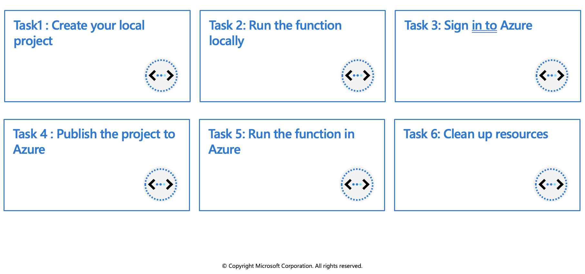
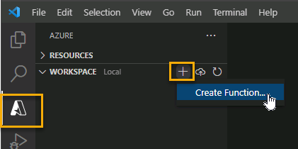
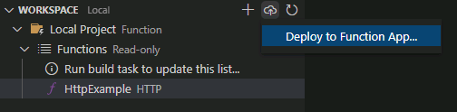
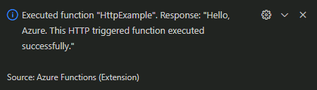

Azure Functions development
A function contains two important pieces - your code, which can be written in a variety of languages, and some config, the function.json file. For compiled languages, this config file is generated automatically from annotations in your code. For scripting languages, you must provide the config file yourself.
The function.json file defines the function's trigger, bindings, and other configuration settings. Every function has one and only one trigger. The runtime uses this config file to determine the events to monitor and how to pass data into and return data from a function execution. The following is an example function.json file.
{
"disabled":false,
"bindings":[
// ... bindings here
{
"type": "bindingType",
"direction": "in",
"name": "myParamName",
// ... more depending on binding
}
]
}
The bindings property is where you configure both triggers and bindings. Each binding shares a few common settings and some settings which are specific to a particular type of binding. Every binding requires the following settings:
| Property | Types | Comments |
|---|---|---|
type |
string | Name of binding. For example, queueTrigger. |
direction |
string | Indicates whether the binding is for receiving data into the function or sending data from the function. For example, in or out. |
name |
string | The name that is used for the bound data in the function. For example, myQueue |
Function app
A function app provides an execution context in Azure in which your functions run. As such, it is the unit of deployment and management for your functions. A function app is comprised of one or more individual functions that are managed, deployed, and scaled together. All of the functions in a function app share the same pricing plan, deployment method, and runtime version. Think of a function app as a way to organize and collectively manage your functions.
Note: In Functions 2.x all functions in a function app must be authored in the same language. In previous versions of the Azure Functions runtime, this wasn't required.
Folder structure
The code for all the functions in a specific function app is located in a root project folder that contains a host configuration file. The host.json file contains runtime-specific configurations and is in the root folder of the function app. A bin folder contains packages and other library files that the function app requires. Specific folder structures required by the function app depend on language:
- C# compiled (.csproj)
- C# script (.csx)
- F# script
- Java
- JavaScript
- Python
FunctionsProject
| - MyFirstFunction
| | - index.js
| | - function.json
| - MySecondFunction
| | - index.js
| | - function.json
| - SharedCode
| | - myFirstHelperFunction.js
| | - mySecondHelperFunction.js
| - node_modules
| - host.json
| - package.json
| - extensions.csproj
Local development environments
Functions makes it easy to use your favorite code editor and development tools to create and test functions on your local computer. Your local functions can connect to live Azure services, and you can debug them on your local computer using the full Functions runtime.
The way in which you develop functions on your local computer depends on your language and tooling preferences. See Code and test Azure Functions locally for more information.
Create triggers and bindings
Triggers are what cause a function to run. A trigger defines how a function is invoked and a function must have exactly one trigger. Triggers have associated data, which is often provided as the payload of the function.
Binding to a function is a way of declaratively connecting another resource to the function; bindings may be connected as input bindings, output bindings, or both. Data from bindings is provided to the function as parameters.
You can mix and match different bindings to suit your needs. Bindings are optional and a function might have one or multiple input and/or output bindings.
Triggers and bindings let you avoid hardcoding access to other services. Your function receives data (for example, the content of a queue message) in function parameters. You send data (for example, to create a queue message) by using the return value of the function.
Trigger and binding definitions
Triggers and bindings are defined differently depending on the development language.
| Language | Triggers and bindings are configured by... |
|---|---|
| C# class library | decorating methods and parameters with C# attributes |
| Java | decorating methods and parameters with Java annotations |
| JavaScript/PowerShell/Python/TypeScript | updating function.json schema |
For languages that rely on function.json, the portal provides a UI for adding bindings in the Integration tab. You can also edit the file directly in the portal in the Code + test tab of your function.
In .NET and Java, the parameter type defines the data type for input data. For instance, use string to bind to the text of a queue trigger, a byte array to read as binary, and a custom type to de-serialize to an object. Since .NET class library functions and Java functions don't rely on function.json for binding definitions, they can't be created and edited in the portal. C# portal editing is based on C# script, which uses function.json instead of attributes.
For languages that are dynamically typed such as JavaScript, use the dataType property in the function.json file. For example, to read the content of an HTTP request in binary format, set dataType to binary:
{
"dataType": "binary",
"type": "httpTrigger",
"name": "req",
"direction": "in"
}
Other options for dataType are stream and string.
Binding direction
All triggers and bindings have a direction property in the function.json file:
- For triggers, the direction is always
in - Input and output bindings use
inandout - Some bindings support a special direction
inout. If you useinout, only the Advanced editor is available via the Integrate tab in the portal.
When you use attributes in a class library to configure triggers and bindings, the direction is provided in an attribute constructor or inferred from the parameter type.
Azure Functions trigger and binding example
Suppose you want to write a new row to Azure Table storage whenever a new message appears in Azure Queue storage. This scenario can be implemented using an Azure Queue storage trigger and an Azure Table storage output binding.
Here's a function.json file for this scenario.
{
"bindings": [
{
"type": "queueTrigger",
"direction": "in",
"name": "order",
"queueName": "myqueue-items",
"connection": "MY_STORAGE_ACCT_APP_SETTING"
},
{
"type": "table",
"direction": "out",
"name": "$return",
"tableName": "outTable",
"connection": "MY_TABLE_STORAGE_ACCT_APP_SETTING"
}
]
}
The first element in the bindings array is the Queue storage trigger. The type and direction properties identify the trigger. The name property identifies the function parameter that receives the queue message content. The name of the queue to monitor is in queueName, and the connection string is in the app setting identified by connection.
The second element in the bindings array is the Azure Table Storage output binding. The type and direction properties identify the binding. The name property specifies how the function provides the new table row, in this case by using the function return value. The name of the table is in tableName, and the connection string is in the app setting identified by connection.
C# script example
Here's C# script code that works with this trigger and binding. Notice that the name of the parameter that provides the queue message content is order; this name is required because the name property value in function.json is order.
#r "Newtonsoft.Json"
using Microsoft.Extensions.Logging;
using Newtonsoft.Json.Linq;
// From an incoming queue message that is a JSON object, add fields and write to Table storage
// The method return value creates a new row in Table Storage
public static Person Run(JObject order, ILogger log)
{
return new Person() {
PartitionKey = "Orders",
RowKey = Guid.NewGuid().ToString(),
Name = order["Name"].ToString(),
MobileNumber = order["MobileNumber"].ToString() };
}
public class Person
{
public string PartitionKey { get; set; }
public string RowKey { get; set; }
public string Name { get; set; }
public string MobileNumber { get; set; }
}
JavaScript example
The same function.json file can be used with a JavaScript function:
// From an incoming queue message that is a JSON object, add fields and write to Table Storage
module.exports = async function (context, order) {
order.PartitionKey = "Orders";
order.RowKey = generateRandomId();
context.bindings.order = order;
};
function generateRandomId() {
return Math.random().toString(36).substring(2, 15) +
Math.random().toString(36).substring(2, 15);
}
Class library example
In a class library, the same trigger and binding information — queue and table names, storage accounts, function parameters for input and output — is provided by attributes instead of a function.json file. Here's an example:
public static class QueueTriggerTableOutput
{
[FunctionName("QueueTriggerTableOutput")]
[return: Table("outTable", Connection = "MY_TABLE_STORAGE_ACCT_APP_SETTING")]
public static Person Run(
[QueueTrigger("myqueue-items", Connection = "MY_STORAGE_ACCT_APP_SETTING")]JObject order,
ILogger log)
{
return new Person() {
PartitionKey = "Orders",
RowKey = Guid.NewGuid().ToString(),
Name = order["Name"].ToString(),
MobileNumber = order["MobileNumber"].ToString() };
}
}
public class Person
{
public string PartitionKey { get; set; }
public string RowKey { get; set; }
public string Name { get; set; }
public string MobileNumber { get; set; }
}
Connect functions to Azure services
Your function project references connection information by name from its configuration provider. It does not directly accept the connection details, allowing them to be changed across environments. For example, a trigger definition might include a connection property. This might refer to a connection string, but you cannot set the connection string directly in a function.json. Instead, you would set connection to the name of an environment variable that contains the connection string.
The default configuration provider uses environment variables. These might be set by Application Settings when running in the Azure Functions service, or from the local settings file when developing locally.
Connection values
When the connection name resolves to a single exact value, the runtime identifies the value as a connection string, which typically includes a secret. The details of a connection string are defined by the service to which you wish to connect.
However, a connection name can also refer to a collection of multiple configuration items. Environment variables can be treated as a collection by using a shared prefix that ends in double underscores __. The group can then be referenced by setting the connection name to this prefix.
For example, the connection property for a Azure Blob trigger definition might be Storage1. As long as there is no single string value configured with Storage1 as its name, Storage1__serviceUri would be used for the serviceUri property of the connection. The connection properties are different for each service.
Configure an identity-based connection
Some connections in Azure Functions are configured to use an identity instead of a secret. Support depends on the extension using the connection. In some cases, a connection string may still be required in Functions even though the service to which you are connecting supports identity-based connections.
Note: Identity-based connections are not supported with Durable Functions.
When hosted in the Azure Functions service, identity-based connections use a managed identity. The system-assigned identity is used by default, although a user-assigned identity can be specified with the credential and clientID properties. When run in other contexts, such as local development, your developer identity is used instead, although this can be customized using alternative connection parameters.
Grant permission to the identity
Whatever identity is being used must have permissions to perform the intended actions. This is typically done by assigning a role in Azure RBAC or specifying the identity in an access policy, depending on the service to which you are connecting.
Exercise: Create an Azure Function by using Visual Studio Code

In this exercise you'll learn how to create a simple C# function that responds to HTTP requests. After creating and testing the code locally in Visual Studio Code you will deploy to Azure.
Prerequisites
Before you begin make sure you have the following requirements in place:
- Azure Account
- The Azure Functions Core Tools version 4.x.
- Visual Studio Code on one of the supported platforms.
- The C# extension for Visual Studio Code.
- .NET 6 is the target framework for the steps below.
- The Azure Functions extension for Visual Studio Code.
Create your local project
In this section, you use Visual Studio Code to create a local Azure Functions project in C#. Later in this exercise, you'll publish your function code to Azure.
Choose the Azure icon in the Activity bar, then in the Workspace area, select Add.... Finally, select Create Function....

Note: IA pop-up message will likely appear prompting you to create a new project, if it does select Create new project.
Choose a directory location for your project workspace and choose Select.
Note: Be sure to select a project folder that is outside of an existing workspace.
Provide the following information at the prompts:
- Select a language: Choose C#.
- Select a .NET runtime: Choose .NET 6
- Select a template for your project's first function: Choose HTTP trigger.
- Provide a function name: Type HttpExample.
- Provide a namespace: Type My.Function.
- Authorization level: Choose Anonymous, which enables anyone to call your function endpoint.
- Select how you would like to open your project: Choose Add to workspace.
Using this information, Visual Studio Code generates an Azure Functions project with an HTTP trigger.
Run the function locally
Visual Studio Code integrates with Azure Functions Core tools to let you run this project on your local development computer before you publish to Azure.
Make sure the terminal is open in Visual Studio Code. You can open the terminal by selecting Terminal and then New Terminal in the menu bar.
Press F5 to start the function app project in the debugger. Output from Core Tools is displayed in the Terminal panel. Your app starts in the Terminal panel. You can see the URL endpoint of your HTTP-triggered function running locally.

With Core Tools running, go to the Azure: Functions area. Under Functions, expand Local Project > Functions. Right-click the
HttpExamplefunction and choose Execute Function Now....
In Enter request body type the request message body value of
{ "name": "Azure" }. Press Enter to send this request message to your function. When the function executes locally and returns a response, a notification is raised in Visual Studio Code. Information about the function execution is shown in Terminal panel.Press Shift + F5 to stop Core Tools and disconnect the debugger.
After you've verified that the function runs correctly on your local computer, it's time to use Visual Studio Code to publish the project directly to Azure.
Sign in to Azure
Before you can publish your app, you must sign in to Azure. If you're already signed in, go to the next section.
If you aren't already signed in, choose the Azure icon in the Activity bar, then in the Azure: Functions area, choose Sign in to Azure....

When prompted in the browser, choose your Azure account and sign in using your Azure account credentials.
After you've successfully signed in, you can close the new browser window. The subscriptions that belong to your Azure account are displayed in the Side bar.
Create resources in Azure
In this section, you create the Azure resources you need to deploy your local function app.
Choose the Azure icon in the Activity bar, then in the Resources area select the Create resource... button.

Provide the following information at the prompts:
- Select Create Function App in Azure...
- Enter a globally unique name for the function app: Type a name that is valid in a URL path. The name you type is validated to make sure that it's unique in Azure Functions.
- Select a runtime stack: Use the same choice you made in the Create your local project section above.
- Select a location for new resources: For better performance, choose a region near you.
- Select subscription: Choose the subscription to use. You won't see this if you only have one subscription.
The extension shows the status of individual resources as they are being created in Azure in the AZURE: ACTIVITY LOG area of the terminal window.
When completed, the following Azure resources are created in your subscription, using names based on your function app name:
- A resource group, which is a logical container for related resources.
- A standard Azure Storage account, which maintains state and other information about your projects.
- A consumption plan, which defines the underlying host for your serverless function app.
- A function app, which provides the environment for executing your function code. A function app lets you group functions as a logical unit for easier management, deployment, and sharing of resources within the same hosting plan.
- An Application Insights instance connected to the function app, which tracks usage of your serverless function.
Deploy the code
In the WORKSPACE section of the Azure bar select the Deploy... button, and then select Deploy to Function App....

When prompted to Select a resource, choose the function app you created in the previous section.
Confirm that you want to deploy your function by selecting Deploy on the confirmation prompt.
Run the function in Azure
Back in the Resources area in the side bar, expand your subscription, your new function app, and Functions. Right-click the
HttpExamplefunction and choose Execute Function Now....
In Enter request body you see the request message body value of
{ "name": "Azure" }. Press Enter to send this request message to your function.When the function executes in Azure and returns a response, a notification is raised in Visual Studio Code.
